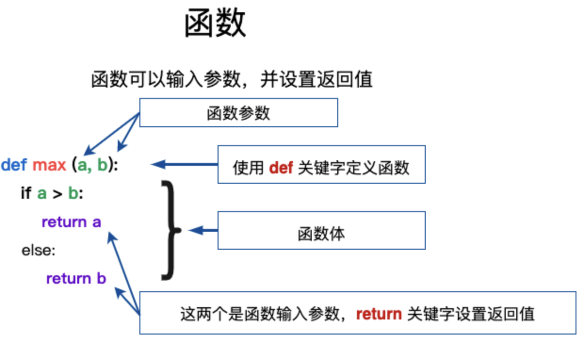

Lesson3 自定义函数，形式参数与实际参数
函数是组织好的，可重复使用的，用来实现单一，或相关联功能的代码段。
函数能提高应用的模块性，和代码的重复利用率。你已经知道Python提供了许多内建函数，比如print()。但你也可以自己创建函数，这被叫做用户自定义函数。
目录
1 定义一个函数
你可以定义一个由自己想要功能的函数，以下是简单的规则：
- 函数代码块以 def 关键词开头，后接函数名和圆括号 ()。
- 圆括号内可以包含传入的参数和自变量，用于定义函数的参数列表。
- 函数的第一行可以选择性地包含文档字符串，以提供对函数的说明。
- 函数内容以冒号 : 起始，并且函数内的代码缩进。
- return [表达式] 结束函数，选择性地返回一个值给调用方，不带表达式的 return 相当于返回 None。

)
1.1 语法
Python 定义函数使用 def 关键字，一般格式如下：
默认情况下，参数值和参数名称是按函数声明中定义的顺序匹配起来的。
实例
让我们使用函数来输出"Hello World!"：
| Python |
|---|
| def hello() :
print("Hello World!")
hello()
|
更复杂点的应用，函数中带上参数变量:
比较两个数，并返回较大的数:
| Python |
|---|
| def max(a, b):
if a > b:
return a
else:
return b
a = 4
b = 5
print(max(a, b))
|
以上实例输出结果：
计算面积函数:
| Python |
|---|
| # 计算面积函数
def area(width, height):
return width * height
def print_welcome(name):
print(f"Welcome {name}")
print_welcome("CodeRaft")
w = 4
h = 5
print(f"width = {w}, height = {h}, area = {area(w, h)}")
|
以上实例输出结果：
| Text Only |
|---|
| Welcome CodeRaft
width = 4 height = 5 area = 20
|
2 函数调用
定义一个函数：给了函数一个名称，指定了函数里包含的参数，和代码块结构。
函数定义完成以后，可以调用执行。
如下实例调用了 printme() 函数：
| Python |
|---|
| def printme(s):
# 打印任何传入的字符串
print(s)
return
# 调用函数
printme("我要调用用户自定义函数!")
printme("再次调用同一函数")
|
以上实例输出结果：
3 参数传递
在 python 中，类型属于对象，对象有不同类型的区分，变量是没有类型的：
以上代码中，[1,2,3] 是 List 类型，"CodeRaft" 是 String 类型，而变量 a 是没有类型，它仅仅是一个对象的引用（一个指针），可以是指向 List 类型对象，也可以是指向 String 类型对象。
3.1 可更改(mutable)与不可更改(immutable)对象：
在 python 中，strings, tuples, 和 numbers 是不可更改的对象，而 list,dict 等则是可以修改的对象。
- 不可变类型： 变量赋值 a=5 后再赋值 a=10，这里实际是新生成一个 int 值对象 10，再让 a 指向它，而 5 被丢弃，不是改变 a 的值，相当于新生成了 a。
- 可变类型： 变量赋值 la=[1,2,3,4] 后再赋值 la[2]=5 则是将 list la 的第三个元素值更改，本身la没有动，只是其内部的一部分值被修改了。
python 函数的参数传递：
- 不可变类型： 类似 C++ 的值传递，如整数、字符串、元组。如 fun(a)，传递的只是 a 的值，没有影响 a 对象本身。如果在 fun(a) 内部修改 a 的值，则是新生成一个 a 的对象。
- 可变类型： 类似 C++ 的引用传递，如 列表，字典。如 fun(la)，则是将 la 真正的传过去，修改后 fun 外部的 la 也会受影响。
python 中一切都是对象，严格意义我们不能说值传递还是引用传递，我们应该说传不可变对象和传可变对象。
3.2 python 传不可变对象实例
通过 id() 函数来查看内存地址变化：
| Python |
|---|
| def change(a):
print(id(a)) # 指向的是同一个对象
a=10
print(id(a)) # 一个新对象
a=1
print(id(a))
change(a)
|
以上实例输出结果为：
*因每台设备而异
| Text Only |
|---|
| 4326120520
4326120520
4326120808
|
可以看见在调用函数前后，形参和实参指向的是同一个对象（对象 id 相同），在函数内部修改形参后，形参指向的是不同的 id。
3.3 传可变对象实例
可变对象在函数里修改了参数，那么在调用这个函数的函数里，原始的参数也被改变了。例如：
| Python |
|---|
| def changeme(mylist):
mylist.append([1,2,3,4])
print("函数内取值: ", mylist)
return
# 调用changeme函数
mylist = [10,20,30]
changeme(mylist)
print("函数外取值: ", mylist)
|
传入函数的和在末尾添加新内容的对象用的是同一个引用。故输出结果如下：
| Text Only |
|---|
| 函数内取值: [10, 20, 30, [1, 2, 3, 4]]
函数外取值: [10, 20, 30, [1, 2, 3, 4]]
|
| Python |
|---|
| def changeme(mylist):
mylist = [1, 2, 3]
mylist.append([1,2,3,4])
print("函数内取值: ", mylist)
return
# 调用changeme函数
mylist = [10,20,30]
changeme(mylist)
print("函数外取值: ", mylist)
|
| Text Only |
|---|
| 函数内取值: [1, 2, 3, [1, 2, 3, 4]]
函数外取值: [10, 20, 30]
|
4 参数
以下是调用函数时可使用的正式参数类型：
4.1 形式参数（形参）
形式参数是在函数定义时使用的变量名称，用于接收传递给函数的值。形参在函数体内充当占位符，在函数调用时会被实参替代。
| Python |
|---|
| def greet(name): # name 是形式参数
print(f"Hello, {name}!")
|
在这个例子中，name 是一个形式参数。当调用 greet 函数时，name 将被实际参数的值替换。
4.2 实际参数（实参）
实际参数是在函数调用时传递给函数的具体值或变量。这些值替换函数定义中的形式参数，以便函数执行操作。
例子：
| Text Only |
|---|
| greet("Alice") # "Alice" 是实际参数
|
在这个例子中，调用 greet("Alice") 时，实际参数 "Alice" 传递给了函数，并替换了形参 name 的值。结果是函数输出了 "Hello, Alice!"。
4.3 形参和实参的区别
- 定义位置：形参出现在函数定义中，而实参出现在函数调用时。
- 作用：形参用于接收和标识传递给函数的值，实参是实际传递给函数的值。
- 生命周期：形参只在函数执行时存在，实参则在调用者的上下文中存在。
4.4 类型和数量的匹配
函数调用时，实参的数量和类型通常需要与函数定义中的形参相匹配。例如，如果函数定义中有三个形参，调用时通常需要提供三个实参。不过，Python支持一些高级功能，如默认参数、关键字参数和可变长度参数，这些功能可以提供更灵活的参数传递方式。
4.5 必需参数
必需参数须以正确的顺序传入函数。调用时的数量必须和声明时的一样。
调用 printme() 函数，你必须传入一个参数，不然会出现语法错误：
| Python |
|---|
| #可写函数说明
def printme(s):
print(s)
return
# 调用 printme 函数，不加参数会报错
printme()
|
| Text Only |
|---|
| 以上实例输出结果：
Traceback (most recent call last):
File "test.py", line 10, in <module>
printme()
TypeError: printme() missing 1 required positional argument: 'str'
|
4.6 关键字参数
关键字参数和函数调用关系紧密，函数调用使用关键字参数来确定传入的参数值。
使用关键字参数允许函数调用时参数的顺序与声明时不一致，因为 Python 解释器能够用参数名匹配参数值。
以下实例在函数 printme() 调用时使用参数名：
| Python |
|---|
| #可写函数说明
def printme(s):
# 打印任何传入的字符串
print(s)
return
#调用printme函数
printme(s="CodeRaft")
|
以上实例输出结果：
以下实例中演示了函数参数的使用不需要使用指定顺序：
| Python |
|---|
| #可写函数说明
def printinfo(name, age):
print("名字: ", name)
print("年龄: ", age)
return
#调用printinfo函数
printinfo(age=50, name="CodeRaft")
|
以上实例输出结果：
4.7 默认参数（选修）
调用函数时，如果没有传递参数，则会使用默认参数。以下实例中如果没有传入 age 参数，则使用默认值：
| Python |
|---|
| #可写函数说明
def printinfo(name, age=35):
"打印任何传入的字符串"
print("名字: ", name)
print("年龄: ", age)
return
#调用printinfo函数
printinfo(age=50, name="CodeRaft")
print("------------------------")
printinfo(name="CodeRaft")
|
输出为：
| Text Only |
|---|
| 名字: CodeRaft
年龄: 50
------------------------
名字: CodeRaft
年龄: 35
|
4.8 不定长参数（选修）
你可能需要一个函数能处理比当初声明时更多的参数。这些参数叫做不定长参数，和上述2种参数不同，声明时不会命名。基本语法如下：
| Python |
|---|
| def functionname([formal_args,] *var_args_tuple):
function_suite
return [expression]
|
加了星号 * 的参数会以元组(tuple)的形式导入，存放所有未命名的变量参数。
| Python |
|---|
| # 可写函数说明
def printinfo(arg1, *vartuple):
print("输出: ")
print(arg1)
print(vartuple)
# 调用printinfo 函数
printinfo(70, 60, 50)
|
以上实例输出结果：
如果在函数调用时没有指定参数，它就是一个空元组。我们也可以不向函数传递未命名的变量。如下实例：
| Python |
|---|
| # 可写函数说明
def printinfo(arg1, *vartuple):
print("输出: ")
print(arg1)
for var in vartuple:
print(var)
return
# 调用printinfo 函数
printinfo(10)
printinfo(70, 60, 50)
|
| Text Only |
|---|
| 以上实例输出结果：
输出:
10
输出:
70
60
50
|
还有一种就是参数带两个星号 ** 基本语法如下：
| Python |
|---|
| def functionname([formal_args,] **var_args_dict):
function_suite
return [expression]
|
加了两个星号 ** 的参数会以字典的形式导入。
| Python |
|---|
| # 可写函数说明
def printinfo(arg1, **vardict):
print("输出: ")
print(arg1)
print(vardict)
# 调用printinfo 函数
printinfo(1, a=2,b=3)
|
以上实例输出结果：
声明函数时，参数中星号 * 可以单独出现，例如:
| Python |
|---|
| def f(a,b,*,c):
return a+b+c
|
如果单独出现星号 *，则星号 * 后的参数必须用关键字传入：
| Text Only |
|---|
| >>> def f(a,b,*,c):
... return a+b+c
...
>>> f(1,2,3) # 报错
Traceback(most recent call last):
File "<stdin>", line 1, in <module>
TypeError: f() takes 2 positional arguments but 3 were given
>>> f(1,2,c=3) # 正常
6
>>>
|
5 匿名函数（选修）
Python 使用 lambda 来创建匿名函数。
所谓匿名，意即不再使用 def 语句这样标准的形式定义一个函数。
5.1 语法
lambda 函数的语法只包含一个语句，如下：
| Python |
|---|
| lambda [arg1 [,arg2,.....argn]]:expression
|
设置参数a加上10:
| Python |
|---|
| x = lambda a : a + 10
print(x(5))
|
以上实例输出结果：
5.2 实例
以下实例匿名函数设置两个参数：
| Python |
|---|
| # 可写函数说明
sum = lambda arg1, arg2: arg1 + arg2
# 调用sum函数
print("相加后的值为: ", sum(10, 20))
print("相加后的值为: ", sum(20, 20))
|
我们可以将匿名函数封装在一个函数内，这样可以使用同样的代码来创建多个匿名函数。
以下实例将匿名函数封装在 myfunc 函数中，通过传入不同的参数来创建不同的匿名函数：
| Python |
|---|
| def myfunc(n):
return lambda a : a * n
mydoubler = myfunc(2)
mytripler = myfunc(3)
print(mydoubler(11))
print(mytripler(11))
|
以上实例输出结果：
6 return 语句
6.1 基础用法
return [表达式] 语句用于退出函数，选择性地向调用方返回一个表达式。不带参数值的 return 语句返回 None。之前的例子都没有示范如何返回数值，以下实例演示了 return 语句的用法：
| Python |
|---|
| # 定义函数
def sum(arg1, arg2):
# 计算两个参数的和
total = arg1 + arg2
print("函数内:", total)
return total
# 调用 sum 函数
total = sum(10, 20)
print("函数外:", total)
|
以上实例输出结果：
6.2 提前结束函数
return 语句可以直接结束函数的执行，因此 return 后面的语句将不会被执行。下面的示例演示了这一特性：
| Python |
|---|
| def check_even(number):
if number % 2 == 0:
return True # 如果条件为真，函数在此处结束，后续代码不会执行
print("这是一个奇数")
return False
result = check_even(4)
print("结果:", result)
|
在上述示例中，如果传入的数字是偶数，return True 会直接终止函数的执行，因此 print("这是一个奇数") 不会被执行。输出结果为：
6.3 循环中的 return
在循环中使用 return 语句会导致函数提前结束，循环也会停止。以下示例展示了如何在循环中使用 return 来找到第一个符合条件的元素：
| Python |
|---|
| def find_first_even(numbers):
for number in numbers:
if number % 2 == 0:
return number # 一旦找到偶数，立即返回，结束函数
return None # 如果循环结束没有找到偶数，返回 None
result = find_first_even([1, 3, 5, 6, 7])
print("第一个偶数是:", result)
|
执行该代码后，输出结果为：
可以看到，当函数找到第一个偶数时，return 立即结束函数的执行，并返回该偶数。
6.4 优化条件判断
return 语句也可以用于简化条件判断结构，从而避免使用冗余的 else 语句。以下示例展示了如何使用 return使代码更简洁：
| Python |
|---|
| def is_positive(number):
if number > 0:
return True
return False # 因为上面的 return 语句，else 可以省略
result = is_positive(-5)
print("是否为正数:", result)
|
此示例的输出结果为：
7 强制位置参数
Python 3.8 引入了一种新的函数参数语法，通过 / 来指明函数的某些参数必须使用位置参数，而不能使用关键字参数形式。类似地，使用 * 可以指定某些参数必须使用关键字参数。
在以下示例中：
/ 之前的参数（a 和 b）必须使用位置参数，这意味着调用函数时，必须按顺序传递这些参数，不能通过关键字形式指定它们。/ 和 * 之间的参数（c 和 d）可以使用位置参数或关键字参数。* 之后的参数（e 和 f）必须使用关键字参数。
| Python |
|---|
| def f(a, b, /, c, d, *, e, f):
print(a, b, c, d, e, f)
|
对于上述函数，以下调用方法是正确的：
| Python |
|---|
| f(10, 20, 30, d=40, e=50, f=60)
|
在这个调用中：
10 和 20 传递给 a 和 b，作为位置参数。30 和 40 分别传递给 c 和 d，其中 d 以关键字参数的形式传递。e 和 f 必须使用关键字参数的形式传递。
以下调用方法会产生错误：
| Python |
|---|
| f(10, b=20, c=30, d=40, e=50, f=60) # 错误：b 不能使用关键字参数的形式
f(10, 20, 30, 40, 50, f=60) # 错误：e 必须使用关键字参数的形式
|
在第一个错误示例中，b 作为关键字参数传递是不允许的，因为它在 / 之前，必须作为位置参数传递。
在第二个错误示例中，e 没有通过关键字参数传递，但因为它在 * 之后，所以必须以关键字参数形式传递。
课后练习
请将下列代码（Lesson2课后练习）的点单、打印客户点单内容、计算订单总价三个功能封装成独立的方法。
| Python |
|---|
| # 餐厅点单程序
# 定义商品的价格常量
PRICE_BURGER = 12.5 # 汉堡的价格
PRICE_FRIES = 6 # 薯条的价格
PRICE_COKE = 4.5 # 可乐的价格
# 初始化总销售额
total_sales = 0.0
while True:
# 提示用户输入是否继续点单，-1表示退出
user_input = input("输入-1退出并计算总销售额，其他数字继续点单: ")
if user_input == '-1':
break
# 接受顾客的点单
num_burgers = int(input("请输入汉堡的数量: "))
num_fries = int(input("请输入薯条的数量: "))
num_cokes = int(input("请输入可乐的数量: "))
# 计算当前顾客的点单总价
total_price = num_burgers * PRICE_BURGER + num_fries * PRICE_FRIES + num_cokes * PRICE_COKE
# 输出当前顾客的点单内容和总价
print(f"顾客点单内容: 汉堡 {num_burgers} 个, 薯条 {num_fries} 份, 可乐 {num_cokes} 瓶")
print(f"本次点单总价: {total_price:.2f} 元")
# 将本次点单总价累加到总销售额中
total_sales += total_price
# 输出所有顾客的总销售额
print(f"所有顾客的总销售额: {total_sales:.2f} 元")
|
参考答案
| Python |
|---|
| # 餐厅点单程序
# 定义商品的价格常量
PRICE_BURGER = 12.5 # 汉堡的价格
PRICE_FRIES = 6 # 薯条的价格
PRICE_COKE = 4.5 # 可乐的价格
# 初始化总销售额
total_sales = 0.0
def take_order():
num_burgers = int(input("请输入汉堡的数量: "))
num_fries = int(input("请输入薯条的数量: "))
num_cokes = int(input("请输入可乐的数量: "))
return num_burgers, num_fries, num_cokes
def print_order(num_burgers, num_fries, num_cokes):
# 打印顾客的点单内容。
print(f"顾客点单内容: 汉堡 {num_burgers} 个, 薯条 {num_fries} 份, 可乐 {num_cokes} 瓶")
def calculate_total_price(num_burgers, num_fries, num_cokes):
# 计算并返回点单总价。
return num_burgers * PRICE_BURGER + num_fries * PRICE_FRIES + num_cokes * PRICE_COKE
while True:
# 提示用户输入是否继续点单，-1表示退出
user_input = input("输入-1退出并计算总销售额，其他数字继续点单: ")
if user_input == '-1':
break
# 接受顾客的点单
num_burgers, num_fries, num_cokes = take_order()
if num_burgers is None or num_fries is None or num_cokes is None:
continue
# 打印顾客的点单内容
print_order(num_burgers, num_fries, num_cokes)
# 计算并输出当前顾客的点单总价
total_price = calculate_total_price(num_burgers, num_fries, num_cokes)
print(f"本次点单总价: {total_price:.2f} 元")
# 将本次点单总价累加到总销售额中
total_sales += total_price
# 输出所有顾客的总销售额
print(f"所有顾客的总销售额: {total_sales:.2f} 元")
|